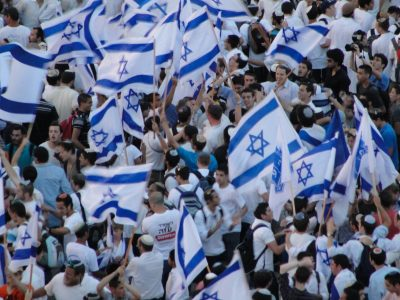

this is para 1
 Independence Day (Hebrew: יום העצמאות Yom Ha'atzmaut, lit. "Day of Independence") is the national day of Israel, commemorating the Israeli Declaration of Independence in 1948. It is celebrated either on the 5th of Iyar, according to the Hebrew calendar, or on one of the preceding or following days, depending on which day of the week this date falls on. Yom Hazikaron, the Israeli Fallen Soldiers and Victims of Terrorism Remembrance Day is followed by Independence Day. Independence Day is founded on the declaration of the establishment of the State of Israel by the Jewish leadership headed by future Prime Minister David Ben-Gurion on 14 May 1948. The mood outside of Ben-Gurion's home just prior to the declaration was joyous: "The Jews of Palestine ... were dancing because they were about to realize what was one of the most remarkable and inspiring achievements in human history: A people which had been exiled from its homeland two thousand years before, which had endured countless pogroms, expulsions, and persecutions, but which had refused to relinquish its identity—which had, on the contrary, substantially strengthened that identity; a people which only a few years before had been the victim of mankind’s largest single act of mass murder, killing a third of the world’s Jews, that people was returning home as sovereign citizens in their own independent state."[1] Independence was declared eight hours before the end of the British Mandate of Palestine, which was due to finish on 15 May 1948.